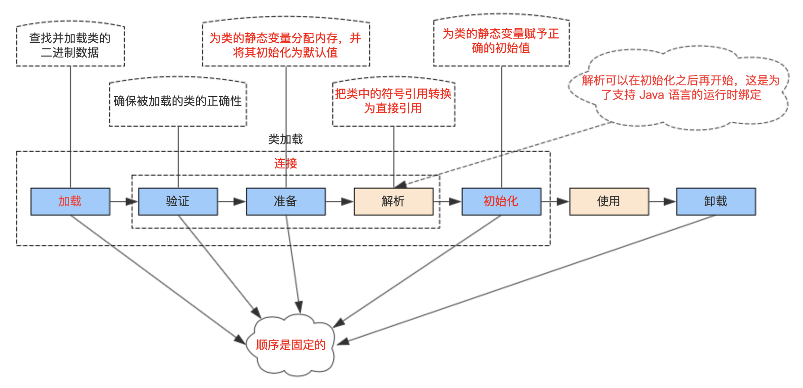
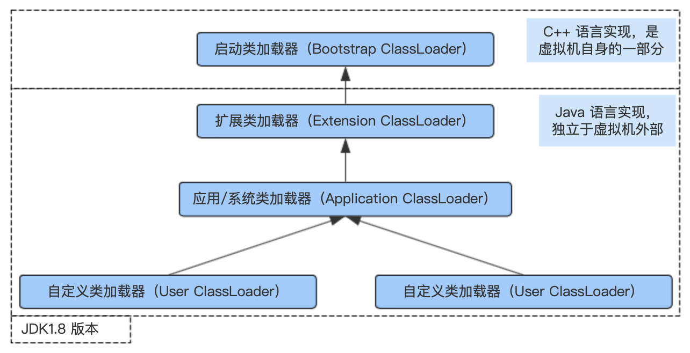

1 类的加载过程 1.1 类的生命周期 
这些阶段通常都是相互交叉地混合式进行，通常会在一个阶段执行的过程中调用、激活另外一个阶段。
在如下几种情况下，Java 虚拟机将结束生命周期：
执行了 System.exit() 方法（实质为给虚拟机本身发送一个执行使其终止）。
程序正常执行结束。
程序在执行过程中遇到了异常或错误而异常终止。
由于操作系统出现错误 而导致 Java 虚拟机进程终止。
1.2 主动引用 虚拟机规范严格规定有且只有 5 种情况必须立即对类进行初始化（而加载、验证、准备自然需要在此之前开始），称为主动引用：
遇到 new、getstatic、putstatic、invokestatic 字节码指令，生成这 4 条指令的最常见场景：① 使用 new 实例化对象；② 读取或设置一个类的 static 字段（被 final 修饰，已在编译器把结果放入常量池的静态字段除外）；③ 调用类的静态方法。
使用 java.lang.reflect 包的方法对类进行反射 调用的时候，如果类没有进行过初始化，则需要先触发其初始化。
当初始化一个类时，如果其父类还没初始化，需先初始化父类。这点类与接口具有不同的表现 ，接口初始化时，不要求其父接口完成初始化，只有真正使用父接口时才初始化，如引用父接口中定义的常量。注意：接口的实现类在初始化时也一样不会要求接口完成初始化 。
当虚拟机启动时，用户需要指定一个执行的主类，即包含 main 方法的那个类，虚拟机会先初始化这个主类。
JDK 1.7 动态语言支持：如果一个 java.lang.invoke.MethodHandle 的实例最后的解析结果为 REF_getStatic、REF_putStatic、REF_invokeStatic 的方法句柄，并且这个方法所对应的类没有进行过初始化，则需要先触发其初始化。
1.3 被动引用 除此之外都不会触发初始化，称为被动引用，主要列举以下 3 种情况：
通过子类引用父类静态字段，只会导致父类的初始化而不会导致子类初始化。HotSpot 可通过 -XX:+TraceClassLoading 参数导致子类的加载。
Array[] arr = new Array[10]; 不会触发 Array 类初始化。
static final VAR 在编译阶段会存入调用类的常量池，通过 ClassName.VAR 引用不会触发 ClassName 初始化。注意：当一个常量的值并非编译期间可以确定，那么其值就不会放入调用类的常量池中，因此当使用该常量值，就会导致该常量所在类的初始化 。
调用 ClassLoader 的 loadClass 方法不会导致类的初始化 。
1.4 类的加载 类的加载指的是将类的 .class 文件中的二进制数据读入到内存中，将其放在运行时数据区的方法区内，然后在内存中创建一个 java.lang.Class 对象用来封装类在方法区内的数据结构。JVM 规范中并未说明 Class 对象位于哪里，Hotspot 虚拟机将其放在方法区中 。
JVM 规范允许类加载器在预料某个类将要被使用时就预先加载 它，如果在预先加载的过程中遇到了 .class 文件缺失或存在错误，类加载器会在程序首次主动引用该类时报告 LinkageError 错误。如果这个类一直没有被程序主动引用，那么类加载器就不会报告错误 。
通过添加：-XX:+TraceClassLoading 程序运行时将打印类的加载过程。
类加载的 .class 文件的来源：
从 ZIP 包中读取；
从网络中获取；
运行时计算生成，比如动态代理技术，在 java.lang.reflect.Proxy 中，就是用了 ProxyGenerator.generateProxyClass 类来为特定接口生成形式为 $Proxy 的代理类的二进制字节流；
有其他文件生成，比如 JSP；
从数据库中读取。
1.5 连接-验证 目的： 确保 class 文件中的字节流信息符合虚拟机的要求。
4 个验证过程：
文件格式验证：是否符合 Class 文件格式规范，验证文件开头 4 个字节是不是 “魔数” 0xCAFEBABE；
元数据验证：保证字节码描述信息符号 Java 规范（语义分析）；
字节码验证：程序语义、逻辑是否正确（通过数据流、控制流分析）；
符号引用验证：对类自身以外的信息（常量池中的符号引用）进行匹配性校验。
这个操作虽然重要，但不是必要的，可以通过 -Xverify:none 关掉。
1.6 连接-准备 描述： 为静态变量在方法区分配内存，并设置默认的初始值。
1 2 3 4 5 6 public static int value = 123 ;public static final int value = 123 ;
1.7 连接-解析 描述： 将常量池中的符号引用替换为直接引用。在此之前，常量池中的引用是不一定存在的，解析过之后，可以保证常量池中的引用在内存中一定存在。
符号引用：以一组符号描述所引用的对象（如对象的全类名），引用的目标不一定存在于内存中。
直接引用：直接指向被引用目标在内存中的位置的指针等，也就是说，引用的目标一定存在于内存中。
1.8 初始化 在准备阶段，变量已经赋过一次系统要求的初始值，而在初始化阶段，则根据程序员通过程序制定的主观计划去初始化类变量和其他资源，初始化阶段是执行类构造器 <client>() 方法的过程 。
<client>() 方法是由编译器自动收集类中的所有类变量的赋值动作 和静态语句块 （static {} 块）中的语句合并产生的，编译器收集的顺序是由语句在源文件中出现的顺序所决定的，静态语句块中只能访问到定义在静态语句块之前的变量，定义在它之后的变量，在前面的静态语句块可以赋值，但是不能访问。
<client>() 方法与类的构造函数（或者说实例构造器 init<>() 方法）不同，它不需要显示地调用父类构造器，虚拟机会保证在子类的 <client>() 方法执行之前，父类的 <client>() 方法已经执行完毕 。因此在虚拟机中第一个被执行的 <client>() 方法的类肯定是 java.lang.Object。
由于父类的 <client>() 方法先执行，也就意味着父类中定义的类变量的赋值和静态语句块要先于子类 。
<client>() 方法对于类或者接口并不是必须的 。
接口中不能使用静态语句块，但仍然有变量初始化的赋值操作，因此接口与类一样都会生成 <client>() 方法。但接口与类不同的是 ，执行接口的 <client>() 方法不需要先执行父接口的 <client>() 方法。只有当父接口中定义的变量使用时，父接口才会初始化。另外，接口的实现类在初始化时也一样不会执行接口的 <client>() 方法 。
虚拟机会保证一个类的 <client>() 方法在多线程执行环境中被正确地加锁、同步，如果多个线程同时去初始化一个类，那么只会有一个线程去执行这个类的 <client>() 方法，其他线程都需要阻塞等待，直到活动线程执行 <client>() 方法完毕。如果在一个类的 <client>() 方法中有耗时很长的操作，就可能造成多个进程阻塞，在实际应用中这种阻塞往往是很隐蔽的。需要注意的是，其他线程虽然会被阻塞，但如果执行 <client>() 方法的那条线程退出 <client>() 方法后，其他线程唤醒之后不会再次进入 <client>() 方法。同一个类加载器下，一个类型只会初始化一次 。
1.9 实战 1.9.1 子类与父类中静态字段的加载与初始化 1 2 3 4 5 6 7 8 9 10 11 12 13 14 15 16 17 18 19 20 21 22 public class MyTest public static void main (String[] args) System.out.println(Child.str); } } class Parent public static String str = "hello world" ; static { System.out.println("Parent static block" ); } } class Child extends Parent static { System.out.println("Child static block" ); } }
当在 Child 类中添加如下代码：
1 2 3 4 5 6 7 8 9 10 11 class Child extends Parent public static String str = "welcome" ; static { System.out.println("Child static block" ); } }
结论 1：初始化一个类时，其父类还没初始化，需先初始化父类。
通过添加：-XX:+TraceClassLoading 观察上述两种情况下类的加载过程。
-XX:+option，表示开启 option 选项，默认没有开启需要开启的情况。
根据 《深入理解Java虚拟机：JVM高级特性与最佳实践》 得知，其子类的加载是因为使用 -XX:+TraceClassLoading 参数 。
1.9.2 编译期常量所在类的初始化 1 2 3 4 5 6 7 8 9 10 11 12 public class MyTest public static void main (String[] args) System.out.println(Parent.str); } } class Parent public static final String str = "hello world" ; static { System.out.println("Parent static block" ); } }
打印结果：hello world，因为 static final 类型的变量在编译期已经存入 MyTest 类的常量池中。所以，通过 Parent.str 引用不会触发 Parent 初始化。将上述代码反编译结果如下：
1 2 3 4 5 6 7 8 9 10 11 12 13 14 15 16 $ javap -c MyTest.class Compiled from "MyTest.java" public class com.westboy.MyTest { public com.westboy.MyTest(); Code: 0: aload_0 1: invokespecial #1 // Method java/lang/Object."<init>":()V 4: return public static void main(java.lang.String[]); Code: 0: getstatic #2 // Field java/lang/System.out:Ljava/io/PrintStream; 3: ldc #4 // String hello world 5: invokevirtual #5 // Method java/io/PrintStream.println:(Ljava/lang/String;)V 8: return }
其中扩展几个常用的助记符：
ldc：表示将 int，float 或是 String 类型的常量值从常量池中推送至栈顶。
关于上述的 iconst 的范围可参考：com.sun.org.apache.bcel.internal.generic.ICONST 类。
1 2 3 4 5 6 7 8 9 10 11 12 13 public class ICONST extends Instruction implements ConstantPushInstruction ... public ICONST (int i) super ((short )3 , (short )1 ); if (i >= -1 && i <= 5 ) { super .setOpcode((short )(3 + i)); this .value = i; } else { throw new ClassGenException("ICONST can be used only for value between -1 and 5: " + i); } } ... }
当然，也会发现对于助记符 sipush 也有对应的类实现（com.sun.org.apache.bcel.internal.generic.SIPUSH），所以对于这些助记符底层都是通过相应的类进行实现的。
1.9.3 非编译期常量所在类的初始化 1 2 3 4 5 6 7 8 9 10 11 12 13 14 15 16 public class MyTest public static void main (String[] args) System.out.println(Parent.str); } } class Parent public static final String str = UUID.randomUUID().toString(); static { System.out.println("Parent static block" ); } }
结论：当一个常量的值并非编译期间可以确定，那么其值就不会放入调用类的常量池中 ，这时在程序运行时，会导致主动使用这个常量所在的类，显然会导致这个类初始化。
1.9.4 数组实例的类型创建时机 1 2 3 4 5 6 7 8 9 10 11 12 13 14 15 16 17 18 19 20 21 22 23 24 25 26 27 28 29 30 public class MyTest public static void main (String[] args) Parent[] parents1 = new Parent[1 ]; System.out.println(parents1.getClass()); System.out.println(parents1.getClass().getSuperclass()); Parent[][] parents2 = new Parent[1 ][1 ]; System.out.println(parents2.getClass()); System.out.println(parents2.getClass().getSuperclass()); int [] ints = new int [1 ]; System.out.println(ints.getClass()); System.out.println(ints.getClass().getSuperclass()); } } class Parent static { System.out.println("Parent static block" ); } }
结论：对于数组实例来说，其类型是由 JVM 在运行期动态生成的，表示为：[Lcom.westboy.Parent 这种形式。动态生成的类型，其父类型就是 Object。对于数组来说，JavaDoc 经常将构建成数组的元素称之为 Component，实际上就是将数组降低一个维度后的类型。
反编译执行结果：
1 2 3 4 5 6 7 8 9 10 11 12 13 14 15 16 17 18 19 20 21 22 23 24 25 26 27 28 29 30 31 32 33 34 35 36 37 38 39 40 41 42 43 44 45 46 47 48 49 50 51 52 53 54 55 56 57 $ javap -c MyTest.class Compiled from "MyTest.java" public class com.westboy.MyTest { public com.westboy.MyTest(); Code: 0: aload_0 1: invokespecial #1 // Method java/lang/Object."<init>":()V 4: return public static void main(java.lang.String[]); Code: 0: iconst_1 1: anewarray #2 // class com/westboy/Parent 4: astore_1 5: getstatic #3 // Field java/lang/System.out:Ljava/io/PrintStream; 8: aload_1 9: invokevirtual #4 // Method java/lang/Object.getClass:()Ljava/lang/Class; 12: invokevirtual #5 // Method java/io/PrintStream.println:(Ljava/lang/Object;)V 15: getstatic #3 // Field java/lang/System.out:Ljava/io/PrintStream; 18: aload_1 19: invokevirtual #4 // Method java/lang/Object.getClass:()Ljava/lang/Class; 22: invokevirtual #6 // Method java/lang/Class.getSuperclass:()Ljava/lang/Class; 25: invokevirtual #5 // Method java/io/PrintStream.println:(Ljava/lang/Object;)V 28: iconst_1 29: iconst_1 30: multianewarray #7, 2 // class "[[Lcom/westboy/Parent;" 34: astore_2 35: getstatic #3 // Field java/lang/System.out:Ljava/io/PrintStream; 38: aload_2 39: invokevirtual #4 // Method java/lang/Object.getClass:()Ljava/lang/Class; 42: invokevirtual #5 // Method java/io/PrintStream.println:(Ljava/lang/Object;)V 45: getstatic #3 // Field java/lang/System.out:Ljava/io/PrintStream; 48: aload_2 49: invokevirtual #4 // Method java/lang/Object.getClass:()Ljava/lang/Class; 52: invokevirtual #6 // Method java/lang/Class.getSuperclass:()Ljava/lang/Class; 55: invokevirtual #5 // Method java/io/PrintStream.println:(Ljava/lang/Object;)V 58: iconst_1 59: newarray int 61: astore_3 62: getstatic #3 // Field java/lang/System.out:Ljava/io/PrintStream; 65: aload_3 66: invokevirtual #4 // Method java/lang/Object.getClass:()Ljava/lang/Class; 69: invokevirtual #5 // Method java/io/PrintStream.println:(Ljava/lang/Object;)V 72: getstatic #3 // Field java/lang/System.out:Ljava/io/PrintStream; 75: aload_3 76: invokevirtual #4 // Method java/lang/Object.getClass:()Ljava/lang/Class; 79: invokevirtual #6 // Method java/lang/Class.getSuperclass:()Ljava/lang/Class; 82: invokevirtual #5 // Method java/io/PrintStream.println:(Ljava/lang/Object;)V 85: iconst_1 86: newarray char 88: astore 4 90: getstatic #3 // Field java/lang/System.out:Ljava/io/PrintStream; 93: aload 4 95: invokevirtual #4 // Method java/lang/Object.getClass:()Ljava/lang/Class; 98: invokevirtual #5 // Method java/io/PrintStream.println:(Ljava/lang/Object;)V 101: return }
扩展助记符：
anewarray：表示创建一个一维引用类型（如类，接口和数组）的数组，并将其引用值压入栈顶。
ClassLoader API Doc 中的片段：数组类型的 Class 对象并不是由类加载器创建的，它是在 Java 运行期自动创建的，通过数组获取的类加载器是与其数组中元素类型通过 Class.getClassLoader 方法获取的类加载器是一致的，如果元素类型是原生类型，那么数组类是没有类加载器的 。
1 2 3 4 5 6 7 8 9 10 11 12 13 14 15 16 17 18 19 20 21 22 23 String[] strings = new String[2 ]; System.out.println(String.class.getClassLoader()); System.out.println(strings.getClass().getClassLoader()); MyTest15[] myTest15s = new MyTest15[2 ]; System.out.println(MyTest15.class.getClassLoader()); System.out.println(myTest15s.getClass().getClassLoader()); int [] ints = new int [2 ];System.out.println(int .class.getClassLoader()); System.out.println(ints.getClass().getClassLoader());
1.9.5 接口相关的初始化 1 2 3 4 5 6 7 8 9 10 11 interface MyParent Thread thread = new Thread() { { System.out.println("MyParent invoked" ); } }; } class MyChild implements MyParent public static int a = 5 ; }
1 2 3 4 5 6 7 8 public class Test public static void main (String[] args) System.out.println(MyChild.a); } }
结论 1：接口的实现类在初始化时不会要求接口的初始化。
1 2 3 4 5 6 7 8 9 10 11 12 13 14 15 interface MyParent Thread thread = new Thread() { { System.out.println("MyParent invoked" ); } }; } interface MyChild extends MyParent Thread thread = new Thread() { { System.out.println("MyChild invoked" ); } }; }
1 2 3 4 5 6 7 8 9 public class Test public static void main (String[] args) System.out.println(MyChild.thread); } }
结论 2：接口初始化时，不要求其父接口完成初始化。
1.9.6 初始化阶段分析 1 2 3 4 5 6 7 8 9 10 11 12 13 14 15 16 17 18 19 20 21 22 23 24 25 26 27 28 public class MyTest public static void main (String[] args) Singleton singleton = Singleton.getInstance(); System.out.println("counter1: " + Singleton.counter1); System.out.println("counter2: " + Singleton.counter2); } } class Singleton public static int counter1; public static int counter2 = 0 ; private static Singleton singleton = new Singleton(); public Singleton () counter1++; counter2++; } public static Singleton getInstance () return singleton; } }
变更下标注 1 行代码的位置：
1 2 3 4 5 6 7 8 9 10 11 12 13 14 15 16 17 18 19 class Singleton public static int counter1; private static Singleton singleton = new Singleton(); public static int counter2 = 0 ; public Singleton () counter1++; counter2++; } public static Singleton getInstance () return singleton; } }
为什么只是变更了一下位置结果却不一样呢？
首先按照加载-连接-初始化的流程，在连接的准备阶段按照从上到下的顺序会对 counter1 和 counter2 和 singleton 三个静态变量分配内存，并初始化默认值，即连接阶段的结果为：counter1 = 0，counter2 = 0 和 singleton = null，又因为 main 方法调用 Singleton.getInstance() 时为上述主动引用中的第一种情况中的第 ③ 种情况：使用静态方法，会使得 Singleton 进行初始化，初始化阶段为对静态变量赋予正确的初始值（见下），但是 counter1 与 counter2 没有进行赋值操作取默认值，所以依然没变，接下来对 singleton 进行初始化操作，在使用 Singleton 构造方法生成对象时，又对 counter1 和 counter2 进行了自增运算，并重新赋值，所以在初始化阶段结束之后：counter1 = 1，counter2 = 1。
与第一种情况不同的是 counter2 与 singleton 两个变量交换了位置，按照加载-连接-初始化的流程，连接阶段的结果依然为：counter1 = 0，counter2 = 0 和 singleton = null，但是在初始化阶段，不同于第一种情况，先对 singleton 进行初始化，其初始化完成后 counter1 = 0，counter2 = 0，接下来继续对 counter2 进行初始化，由于没有对 counter2 进行赋值操作取默认值，导致最终结果为：counter1 = 1，counter2 = 0。
3 类加载器 3.1 类与类加载器 Bootsrap ClassLoader：启动类加载器（也称根类加载器） ：该类加载器负责加载 JAVA_HOME/jre/lib 或者由 -Xbootclasspath 参数（或者使用 -D 选项指定 sun.boot.class.path ）所指定的路径中的，并且是虚拟机识别的类库到虚拟机内存中。启动类加载器无法被 Java 程序直接引用，用户在编写自定义类加载器时，如果需要把加载请求委派给启动类加载器，那直接使用 null 代替即可。
1 2 3 4 5 6 7 8 9 10 11 12 13 14 15 16 17 18 19 public class MyTest18 public static void main (String[] args) URL[] urls = sun.misc.Launcher.getBootstrapClassPath().getURLs(); for (int i = 0 ; i < urls.length; i++) { System.out.println(urls[i].toExternalForm()); } } }
Extension ClassLoader：扩展类加载器 ：这个加载器由 sun.misc.Launcher$ExtClassLoader 实现。它负责加载 JAVA_HOME/jre/lib/ext 或者由 java.ext.dirs 系统指定的目录中的 JAR 包的类。
通过这种方式，就可以为 Java 扩展核心类以外的新功能，只要把自己开发的类打成 JAR 文件，然后放入 JAVA_HOME/jre/lib/ext 路径即可。
System ClassLoader：系统类加载器（也称应用类加载器） ：这个加载器由 sun.misc.Launcher$AppClassLoader 实现。它负责在 JVM 启动时加载来自 java 命令的 -classpath 选项、java.class.path 系统属性，或 CLASSPATH 环境变量所指定的 JAR 包和类路径。程序可以用通过 ClassLoader 的静态方法 getSystemClassLoader() 方法来获取系统类加载器。如果没有特别指定，则用户自定义的类加载器都以应用类加载器作为父加载器。
扩展-1 ：可以通过以下方法获取到每个类加载器默认所加载的路径。
1 2 3 4 5 6 7 8 9 10 11 12 13 14 15 16 17 18 19 20 21 22 23 24 25 26 27 28 29 30 31 32 33 34 public class MyTest18 public static void main (String[] args) print("sun.boot.class.path" , "启动类加载器" ); print("java.ext.dirs" , "扩展类加载器" ); print("java.class.path" , "应用类加载器" ); } private static void print (String s, String classLoaderName) System.out.println(classLoaderName + "加载路径: " ); for (String v : System.getProperty(s).split(":" )) { System.out.println(v); } } }
扩展-2 ：扩展类加载器注意要点：扩展类加载器需要将加载的类打成 jar 放置在加载目录下才能加载，而启动类加载器与应用类加载器只需要将 .class 文件放置在加载目录下即可。
1 2 3 4 5 6 7 8 9 10 11 public class MyTest22 static { System.out.println("MyTest22 initializer" ); } public static void main (String[] args) System.out.println(MyTest22.class.getClassLoader()); System.out.println(MyTest15.class.getClassLoader()); } }
不打包执行：
1 2 3 4 5 6 ➜ classes git:(master) ✗ pwd /Users/westboy/IdeaProjects/personal/java-learning/shengsiyuan-jvm/target/classes # 当前路径 ➜ classes git:(master) ✗ java -Djava.ext.dirs=./ com.westboy.MyTest22 MyTest22 initializer sun.misc.Launcher$AppClassLoader@2a139a55 # MyTest22 由应用类加载器加载 sun.misc.Launcher$AppClassLoader@2a139a55 # MyTest15 由应用类加载器加载
打包执行：
1 2 3 4 5 6 7 ➜ classes git:(master) ✗ jar cvf test.jar com/westboy/MyTest15.class # 打包操作 已添加清单 正在添加: com/westboy/MyTest15.class(输入 = 1121) (输出 = 589)(压缩了 47%) ➜ classes git:(master) ✗ java -Djava.ext.dirs=./ com.westboy.MyTest22 # 打包结束后执行 MyTest22 initializer sun.misc.Launcher$AppClassLoader@2a139a55 # MyTest22 由应用类加载器加载 sun.misc.Launcher$ExtClassLoader@33909752 # MyTest15 由扩展类加载器加载
结论：可见扩展类加载器需要将加载的类打成 jar 放置在加载目录下才能加载，而启动类加载器与应用类加载器只需要将 .class 文件放置在加载目录下即可 。
扩展-3 ：修改默认的应用类加载器。
1 2 3 4 5 6 7 8 9 10 11 12 13 public class MyTest23 public static void main (String[] args) System.out.println(ClassLoader.class.getClassLoader()); System.out.println(Launcher.class.getClassLoader()); System.out.println(System.getProperty("java.system.class.loader" )); System.out.println(MyTest23.class.getClassLoader()); System.out.println(MyTest16.class.getClassLoader()); System.out.println(ClassLoader.getSystemClassLoader()); } }
执行结果：
1 2 3 4 5 6 7 ➜ classes git:(master) ✗ java -Djava.system.class.loader=com.westboy.MyTest16 com.westboy.MyTest23 # 修改 java.system.class.loader 属性 null # ClassLoader 是由启动类加载器加载 null # 扩展类加载器与应用类加载器也是由启动类加载器所加载的 com.westboy.MyTest16 # 默认的类加载器已经被修改 sun.misc.Launcher$AppClassLoader@18b4aac2 # MyTest23 由应用类加载器加载 sun.misc.Launcher$AppClassLoader@18b4aac2 # MyTest16 由应用类加载器加载 MyTest16{classLoaderName='null'} # 可见将 java.system.class.loader 属性设置为 MyTest16 类加载器已经生效
注意：在引用之前 MyTest16 的类加载器的时候，必须添加如下构造器：
1 2 3 public MyTest16 (ClassLoader classLoader) super (classLoader); }
原因参见：待补充…
3.2 类的加载机制 JVM 的类加载机制主要有如下三种。
① 全盘负责 。所谓全盘负责，就是当一个类加载器负责加载某个 Class 时，该 Class 所依赖和引用的其他 Class 也将由该类加载器负责载入，除非显示使用另一个类加载器来加载。② 双亲委派（父类委托） 。所谓父类委托，则是先让父类加载器视图加载该 Class，只有在父类加载器无法加载该类时才尝试从自己的类路径中加载该类。③ 缓存机制 。缓存机制将会保存所有加载过的 Class 都会被缓存，当程序中需要用某个 Class 时，类加载器先从缓存区中搜寻该 Class，只有当缓存区中不存在该 Class 对象时，系统才会读取该类对应的二进制数据，并将其转换成 Class 对象，存入缓存区中，这就是为什么修改了 Class 后，必须重启 JVM，程序所做的修改才会生效的原因。
3.2 双亲委派模型

上图展示的类加载器之间的层次关系，称为类加载器的双亲委派模型（Parents Delegation Model）。该模型要求除了顶层的启动类加载器外，其余的类加载器都应该有自己的父类加载器，而这种父子关系一般通过组合（Composition）关系来实现，而不是通过继承（Inheritance） 。
类加载器的父子关系不是通过继承来实现的，比如 AppClassLoader 并不是 ExtClassLoader 的子类，而是说 AppClassLoader 的 parent 成员变量指向 ExtClassLoader 对象。
双亲委派模型的工作过程 ：
① 如果一个类加载器收到了类加载的请求，它首先不会自己去尝试加载这个类，而是把这个请求委派给父类加载器去完成。
双亲委派模型的优点 ：
① 可以确保 Java 核心库的类型安全 ：例如类 java.lang.Object，它存放在 rt.jar 之中，无论哪一个类加载器要加载这个类，最终都是委派给处于模型最顶端的启动类加载器进行加载，因此 Object 类在程序的各种类加载器环境中都是同一个类。相反，如果没有使用双亲委派模型，由各个类加载器自行去加载的话，如果用户自己编写了一个称为 java.lang.Object 的类，并放在程序的 ClassPath 中，那系统中将会出现多个不同的 Object 类，Java 类型体系中最基础的行为也就无法保证，应用程序也将会变得一片混乱。而且这些之间还是不兼容的，相互不可见的（正是命名空间在发挥作用，类加载器的命名空间在下文自定义 ClassLoader 中会顺带讲解）。可以确保 Java 核心类库所提供的类不会被自定义的类所替代 。不同类加载器可以为相同名称的类创建额外的命名空间 。相同名称的类可以并存在 Java 虚拟机中，只需要用不同的类加载器来加载它们即可。不同类加载器所加载的类之间是不兼容的，这就相当于在 Java 虚拟机内部创建了一个又一个相互隔离的 Java 类空间，这类技术在很多框架中都得到了实际应用。
双亲委派模型的系统实现 ：
双亲委派模型对于保证 Java 程序的稳定运作很重要，但它的实现却很简单，实现集中在 java.lang.ClassLoader 的 loadClass 方法中，在其方法中，主要判断逻辑 ：先检查是否已经被加载过，若没有加载则调用父类加载器的 loadClass 方法，若父类加载器为空默认使用启动类加载器作为父类加载器。如果父类加载失败，抛出 ClassNotFoundException 异常后，再调用自己的 findClass 方法进行加载。
1 2 3 4 5 6 7 8 9 10 11 12 13 14 15 16 17 18 19 20 21 22 23 24 25 26 27 28 29 30 31 32 33 protected Class<?> loadClass(String name, boolean resolve) throws ClassNotFoundException { synchronized (getClassLoadingLock(name)) { Class<?> c = findLoadedClass(name); if (c == null ) { long t0 = System.nanoTime(); try { if (parent != null ) { c = parent.loadClass(name, false ); } else { c = findBootstrapClassOrNull(name); } } catch (ClassNotFoundException e) { } if (c == null ) { long t1 = System.nanoTime(); c = findClass(name); sun.misc.PerfCounter.getParentDelegationTime().addTime(t1 - t0); sun.misc.PerfCounter.getFindClassTime().addElapsedTimeFrom(t1); sun.misc.PerfCounter.getFindClasses().increment(); } } if (resolve) { resolveClass(c); } return c; } }
3.3 破坏双亲委派模型（TODO 简化） 双亲委派模型并不是一个强制性的约束模型 。而是 Java 设计者推荐给开发者的类加载器实现方式。在 Java 的世界中大部分的类加载器都遵循这个模型，但也有例外。
双亲委派模型的第一次“被破坏” 其实发生在双亲委派模型出现之前—即 JDK1.2 发布之前。由于双亲委派模型是在 JDK1.2 之后才被引入的，而类加载器和抽象类 java.lang.ClassLoader 则是 JDK1.0 时候就已经存在，面对已经存在的用户自定义类加载器的实现代码，Java 设计者引入双亲委派模型时不得不做出一些妥协。为了向前兼容，JDK1.2 之后的 java.lang.ClassLoader 添加了一个新的 proceted 方法 findClass，在此之前，用户去继承 java.lang.ClassLoader 的唯一目的就是重写 loadClass() 方法，因为虚拟机在进行类加载的时候会调用加载器的私有方法 loadClassInternal，而这个方法的唯一逻辑就是去调用自己的 loadClass。JDK1.2 之后已不再提倡用户再去覆盖 loadClass 方法，应当把自己的类加载逻辑写到 findClass 方法中，在 loadClass 方法的逻辑里，如果父类加载器加载失败，则会调用自己的 findClass 方法来完成加载，这样就可以保证新写出来的类加载器是符合双亲委派模型的。
双亲委派模型的第二次“被破坏” 是这个模型自身的缺陷所导致的，双亲委派模型很好地解决了各个类加载器的基础类统一问题（越基础的类由越上层的加载器进行加载），基础类之所以被称为“基础”，是因为它们总是作为被调用代码调用的 API。但是，如果基础类又要调用用户的代码，那该怎么办呢？
这并非是不可能的事情，一个典型的例子便是 JNDI 服务，它的代码由启动类加载器去加载（在 JDK1.3 时放进 rt.jar），但 JNDI 的目的就是对资源进行集中管理和查找，它需要调用独立厂商实现部部署在应用程序的 classpath 下的 JNDI 接口提供者（SPI, Service Provider Interface）的代码，但启动类加载器不可能“认识”之些代码，该怎么办？
为了解决这个困境，Java 设计团队只好引入了一个不太优雅的设计：线程上下文件类加载器 （Thread Context ClassLoader）。这个类加载器可以通过 java.lang.Thread 类的 setContextClassLoader 方法进行设置，如果创建线程时还未设置，它将会从父线程中继承一个；如果在应用程序的全局范围内都没有设置过，那么这个类加载器默认就是应用程序类加载器。了有线程上下文类加载器，JNDI 服务使用这个线程上下文类加载器去加载所需要的 SPI 代码，也就是父类加载器请求子类加载器去完成类加载动作，这种行为实际上就是打通了双亲委派模型的层次结构来逆向使用类加载器，已经违背了双亲委派模型，但这也是无可奈何的事情。Java 中所有涉及 SPI 的加载动作基本上都采用这种方式，例如 JNDI，JDBC，JCE，JAXB 和 JBI 等。
关于线程上下文件类加载器扩展知识参见：3.5 线程上下文类加载器分析
双亲委派模型破坏举例 （淘宝面试题）
原生的 JDBC 中 Driver 驱动本身只是一个接口，并没有具体的实现，具体的实现是由不同数据库类型去实现的。例如，MySQL 的 mysql-connector-java.jar 中的 Driver 类具体实现的。 原生的 JDBC 中的类是放在 rt.jar 包的，是由启动类加载器进行类加载的，在 JDBC 中的 Driver 类中需要动态去加载不同数据库类型的 Driver 类，而 mysql-connector-java.jar 中的 Driver 类是用户自己写的代码，那启动类加载器肯定是不能进行加载的，既然是自己编写的代码，那就需要由应用程序启动类去进行类加载。于是乎，这个时候就引入线程上下文件类加载器。因此，程序就可以把原本需要由启动类加载器进行加载的类，由应用程序类加载器去进行加载了 。代码分析参见：3.4 破坏双亲委派模型的-JDBC-实现案例
双亲委派模型的第三次“被破坏” 是由于用户对程序动态性的追求导致的，这里所说的“动态性”指的是当前一些非常“热门”的名词：代码热替换、模块热部署等，简答的说就是机器不用重启，只要部署上就能用。
OSGi 实现模块化热部署的关键则是它自定义的类加载器机制的实现。每一个程序模块（Bundle）都有一个自己的类加载器，当需要更换一个 Bundle 时，就把 Bundle 连同类加载器一起换掉以实现代码的热替换。在 OSGi 坏境下，类加载器不再是双亲委派模型中的树状结构，而是进一步发展为更加复杂的网状结构，当受到类加载请求时，OSGi 将按照下面的顺序进行类搜索：
将 java.＊ 开头的类委派给父类加载器加载。
否则，将委派列表名单内的类委派给父类加载器加载。
否则，将 Import 列表中的类委派给 Export 这个类的 Bundle 的类加载器加载。
否则，查找当前 Bundle 的 ClassPath，使用自己的类加载器加载。
否则，查找类是否在自己的 Fragment Bundle 中，如果在，则委派给 Fragment Bundle 的类加载器加载。
否则，查找 Dynamic Import 列表的 Bundle，委派给对应 Bundle 的类加载器加载。
否则，类加载器失败。
上面的查找顺序中只有开头两点仍然符合双亲委派规则，其余的类查找都是在平级的类加载器中进行的。
虽然使用了“被破坏”这个词形容上述不符合双亲委派模型原则的行为，但这里“被破坏”并不带有贬义的感情色彩。只要有足够意义和理由，突破已有的原则就可以认为是一种创新。
3.4 破坏双亲委派模型的 JDBC 实现案例 我们结合 Driver 来看一下在 SPI（Service Provider Inteface）中如何实现破坏双亲委派。
先从 DriverManager 开始看，平时我们通过 DriverManager 来获取数据库的 Connection：
1 2 String url = "jdbc:mysql://localhost:3306/testdb" ; Connection conn = java.sql.DriverManager.getConnection(url, "root" , "root" );
在调用 DriverManager 的时候，会先初始化类，调用其中的静态块：
1 2 3 4 5 6 7 8 9 10 11 12 13 14 15 16 17 18 19 20 21 22 23 24 static { loadInitialDrivers(); println("JDBC DriverManager initialized" ); } private static void loadInitialDrivers () ... AccessController.doPrivileged(new PrivilegedAction<Void>() { public Void run () ServiceLoader<Driver> loadedDrivers = ServiceLoader.load(Driver.class); Iterator<Driver> driversIterator = loadedDrivers.iterator(); try { while (driversIterator.hasNext()) { driversIterator.next(); } } catch (Throwable t) { } return null ; } }); ... }
为了节约空间，笔者省略了一部分的代码，重点来看一下 ServiceLoader.load(Driver.class)：
1 2 3 4 5 public static <S> ServiceLoader<S> load (Class<S> service) { ClassLoader cl = Thread.currentThread().getContextClassLoader(); return ServiceLoader.load(service, cl); }
可以看到，load 方法调用获取了当前线程中的上下文类加载器，那么上下文类加载器放的是什么加载器呢？在 sun.misc.Launcher 中，我们找到了答案，在 Launcher 初始化的时候，会获取 AppClassLoader，然后将其设置为上下文类加载器，而这个 AppClassLoader，就是之前上文提到的应用类加载器，所以线程上下文类加载器默认情况下就是应用类加载器 。
1 2 3 4 5 6 7 8 9 10 11 12 public class Launcher { public Launcher() { ... try { this.loader = Launcher.AppClassLoader.getAppClassLoader(var1); } catch (IOException var9) { throw new InternalError("Could not create application class loader", var9); } Thread.currentThread().setContextClassLoader(this.loader); ... } }
继续来看下 ServiceLoader.load(service, cl)：
1 2 3 4 5 6 7 8 9 10 11 12 13 14 15 16 public static <S> ServiceLoader<S> load (Class<S> service, ClassLoader loader) { return new ServiceLoader<>(service, loader); } private ServiceLoader (Class<S> svc, ClassLoader cl) service = Objects.requireNonNull(svc, "Service interface cannot be null" ); loader = (cl == null ) ? ClassLoader.getSystemClassLoader() : cl; acc = (System.getSecurityManager() != null ) ? AccessController.getContext() : null ; reload(); } public void reload () providers.clear(); lookupIterator = new LazyIterator(service, loader); }
上面这段就不解释了，比较简单，然后就是看 LazyIterator 迭代器：
1 2 3 4 5 6 7 8 9 10 11 12 13 14 15 16 17 18 19 20 21 22 23 24 25 26 27 28 29 30 31 32 33 34 35 36 37 38 39 40 41 42 43 44 45 46 47 48 49 50 51 52 53 54 55 56 57 58 59 60 61 62 63 64 65 66 67 68 69 70 71 72 73 74 75 76 77 private class LazyIterator implements Iterator <S > public S next () if (acc == null ) { return nextService(); } else { PrivilegedAction<S> action = new PrivilegedAction<S>() { public S run () return nextService(); } }; return AccessController.doPrivileged(action, acc); } } private S nextService () if (!hasNextService()) throw new NoSuchElementException(); String cn = nextName; nextName = null ; Class<?> c = null ; try { c = Class.forName(cn, false , loader); } catch (ClassNotFoundException x) { fail(service, "Provider " + cn + " not found" ); } if (!service.isAssignableFrom(c)) { fail(service, "Provider " + cn + " not a subtype" ); } try { S p = service.cast(c.newInstance()); providers.put(cn, p); return p; } catch (Throwable x) { fail(service, "Provider " + cn + " could not be instantiated" , x); } throw new Error(); } public boolean hasNext () if (acc == null ) { return hasNextService(); } else { PrivilegedAction<Boolean> action = new PrivilegedAction<Boolean>() { public Boolean run () return hasNextService(); } }; return AccessController.doPrivileged(action, acc); } } private boolean hasNextService () if (nextName != null ) { return true ; } if (configs == null ) { try { String fullName = PREFIX + service.getName(); if (loader == null ) configs = ClassLoader.getSystemResources(fullName); else configs = loader.getResources(fullName); } catch (IOException x) { fail(service, "Error locating configuration files" , x); } } while ((pending == null ) || !pending.hasNext()) { if (!configs.hasMoreElements()) { return false ; } pending = parse(service, configs.nextElement()); } nextName = pending.next(); return true ; } }
好了，这里基本就差不多完成整个流程了，一起走一遍：
3.5 线程上下文类加载器分析 线程上下文类加载器（Context ClassLoader）：线程上下文类加载器是从 JDK1.2 开始引入的，类 Thread 中 getContextClassLoader 与 setContextClassLoader 方法分别用来获取和设置上下文类加载器。
扩展-1 ：线程上下文类加载器默认使用应用类加载器。
1 2 3 4 5 6 public class MyTest24 public static void main (String[] args) System.out.println(Thread.currentThread().getContextClassLoader()); System.out.println(Thread.class.getClassLoader()); } }
执行结果：
1 2 sun.misc.Launcher$AppClassLoader@18b4aac2 # 应用类加载器 null # 启动类加载器
这里首先要理解类加载中的一个机制，如果一个类由类加载器 A 加载，那么这个类的依赖类也是由相同的类加载器 A 加载的（如果该依赖之前没有被加载过的话），什么是指依赖类呢？依赖类是指当前类使用的其它类，将其它类称之为当前类的依赖类。上下文类加载器的作用就是为了破坏 Java 的类加载委托机制。它是怎么实现的呢？其实在3.4 破坏双亲委派模型的 JDBC 实现案例 中的代码分析已经有说明，是通过在 Launcher 类的构造方法中设置的。所以上述上下文类加载器的打印结果即应用类加载器。
1 2 3 4 5 6 7 8 9 10 11 12 public class Launcher public Launcher () ... try { this .loader = Launcher.AppClassLoader.getAppClassLoader(var1); } catch (IOException var9) { throw new InternalError("Could not create application class loader" , var9); } Thread.currentThread().setContextClassLoader(this .loader); ... } }
扩展-2 ：线程上下文类加载器的一般使用模式。当高层提供了统一的接口让低层去实现，同时又要在高层加载（或实例化）低层的类时，就必须要通过线程上下文类加载器来帮助高层的类加载器找到并加载该类。
1 2 3 4 5 6 7 8 9 try { Thread.currentThread().setContextClassLoader(targetTccl); myMethod(); } finally { Thread.currentThread().setContextClassLoader(classLoader); }
扩展-3 ：MySQL 驱动实现类的加载。
添加 mysql-connector-java 依赖：
1 2 3 4 5 <dependency > <groupId > mysql</groupId > <artifactId > mysql-connector-java</artifactId > <version > 5.1.47</version > </dependency >
1 2 3 4 5 6 7 8 9 10 11 12 13 14 public class MyTest26 public static void main (String[] args) ServiceLoader<Driver> loader = ServiceLoader.load(Driver.class); Iterator<Driver> iterator = loader.iterator(); while (iterator.hasNext()) { Driver driver = iterator.next(); System.out.println("driver: " + driver.getClass() + ", loader: " + driver.getClass().getClassLoader()); } System.out.println("当前线程上下文类加载器：" + Thread.currentThread().getContextClassLoader()); System.out.println("ServiceLoader 的类加载器：" + ServiceLoader.class.getClassLoader()); } }
执行结果：
1 2 3 4 driver: class com.mysql.jdbc.Driver, loader: sun.misc.Launcher$AppClassLoader@18b4aac2 # 应用类加载器加载 driver: class com.mysql.fabric.jdbc.FabricMySQLDriver, loader: sun.misc.Launcher$AppClassLoader@18b4aac2 # 应用类加载器加载 当前线程上下文类加载器：sun.misc.Launcher$AppClassLoader@18b4aac2 # 应用类加载器加载 ServiceLoader 的类加载器：null # 位于 rt.jar 包中属于启动类加载器加载
JVM 是怎么可以通过一个 Driver 接口就找到具体的实现类呢？ ServiceLoader 类的文档说明：
我们可以在 mysql-connector-java-5.1.47.jar 文件下找到对应 ServiceLoader 类的文档中描述的配置信息，也就知道了上述打印结果的 Driver 接口实现类从何而来。
3.6 自定义类加载器 1 2 3 4 5 6 7 8 9 10 11 12 13 14 15 16 17 18 19 20 21 22 23 24 25 26 27 28 29 30 31 32 33 34 35 36 37 38 39 40 41 42 43 44 45 46 47 48 49 50 51 52 53 54 55 56 57 58 59 60 61 62 63 64 65 66 67 68 69 70 71 72 73 74 75 76 77 78 79 80 81 82 83 84 85 86 87 88 89 90 public class MyTest16 extends ClassLoader private String classLoaderName; private String path; private final String fileExtension = ".class" ; public MyTest16 (String classLoaderName) super (); this .classLoaderName = classLoaderName; } public MyTest16 (ClassLoader parent, String classLoaderName) super (parent); this .classLoaderName = classLoaderName; } public void setPath (String path) this .path = path; } @Override public String toString () return "MyTest16{" + "classLoaderName='" + classLoaderName + '\'' + '}' ; } @Override protected Class<?> findClass(String className) throws ClassNotFoundException { System.out.println("findClass invoked: " + className); System.out.println("class loader name: " + this .classLoaderName); byte [] data = this .loadClassData(className); return this .defineClass(className, data, 0 , data.length); } private byte [] loadClassData(String className) { InputStream is = null ; byte [] data = null ; ByteArrayOutputStream baos = null ; className = className.replace("." , "\\" ); try { is = new FileInputStream(new File(this .path + className + this .fileExtension)); baos = new ByteArrayOutputStream(); int ch = 0 ; while ((ch = is.read()) != -1 ) { baos.write(ch); } data = baos.toByteArray(); } catch (Exception ex) { ex.printStackTrace(); } finally { try { is.close(); baos.close(); } catch (Exception ex) { ex.printStackTrace(); } } return data; } public static void main (String[] args) throws Exception MyTest16 loader1 = new MyTest16("loader1" ); loader1.setPath("C:\\Users\\westboy\\IdeaProjects\\jvm-learning\\shengsiyuan-jvm\\target\\classes\\" ); Class<?> clazz1 = loader1.loadClass("com.westboy.MyTest15" ); System.out.println("class1: " + clazz1.hashCode()); Object object1 = clazz1.newInstance(); System.out.println(object1); System.out.println(object1.getClass().getClassLoader()); System.out.println(); MyTest16 loader2 = new MyTest16("loader2" ); loader2.setPath("C:\\Users\\westboy\\IdeaProjects\\jvm-learning\\shengsiyuan-jvm\\target\\classes\\" ); Class<?> clazz2 = loader2.loadClass("com.westboy.MyTest15" ); System.out.println("class2: " + clazz2.hashCode()); Object object2 = clazz2.newInstance(); System.out.println(object2); System.out.println(object2.getClass().getClassLoader()); } }
执行结果：
1 2 3 4 5 6 7 class1: 460141958 MyTest15 sun.misc.Launcher$AppClassLoader@18b4aac2 class2: 460141958 MyTest15 sun.misc.Launcher$AppClassLoader@18b4aac2
根据以上的执行结果，可见并没有使用我们自定义的类加载器进行加载，而是由应用类加载器所加载的，这是为什么？因为我们自己所定义的类加载器是将应用类加载器所加载作为父类加载器，根据双亲委派模型可知是由我们自定义类加载器的父类加载器，即应用类加载器所加载。而且因为 loader1 与 loader2 都是同一个父类加载器所以 class1.hashCode 与 class2.hashCode 的值是一样的。
接下来对上述 main 方法进行修改下：
1 2 3 4 5 6 7 8 9 10 11 12 13 14 15 16 17 18 19 20 21 MyTest16 loader1 = new MyTest16("loader1" ); loader1.setPath("D:\\jvm\\" ); Class<?> clazz1 = loader1.loadClass("com.westboy.MyTest15" ); System.out.println("class1: " + clazz1.hashCode()); Object object = clazz1.newInstance(); System.out.println(object1); System.out.println(object1.getClass().getClassLoader()); System.out.println(); MyTest16 loader2 = new MyTest16("loader2" ); loader2.setPath("D:\\jvm\\" ); Class<?> clazz2 = loader2.loadClass("com.westboy.MyTest15" ); System.out.println("class2: " + clazz2.hashCode()); Object object2 = clazz2.newInstance(); System.out.println(object2); System.out.println(object2.getClass().getClassLoader());
注意：执行前在将原有默认路径下的 MyTest15.class 文件拷贝至指定的路径下的同时，必须将原有路径下的 MyTest15.class 文件删除，如果不删除，执行结果与之前一样，因为 loader1 与 loader2 同属同一个父类加载器，即应用类加载器，而应用类加载器默认是加载用户类路径 ClassPath 上所指定的类，因此要想验证自定义类加载器必须删除 MyTest15.class 文件。
执行结果：
1 2 3 4 5 6 7 8 9 10 11 findClass invoked: com.westboy.MyTest15 class loader name: loader1 class1: 1956725890 MyTest15 MyTest16{classLoaderName='loader1'} findClass invoked: com.westboy.MyTest15 class loader name: loader2 class2: 21685669 MyTest15 MyTest16{classLoaderName='loader2'}
可见，我们自定义的类加载器生效了，那么为什么 class1.hashCode 与 class2.hashCode 不一致呢？这里涉及到类加载器的命名空间 问题。
1）每个类加载器都有自己的命名空间，命名空间由该加载器及所有父类加载器 所加载的类组成。
接下来，我们继续对代码进行改造，只需修改下面一行代码：
1 2 MyTest16 loader2 = new MyTest16(loader1, "loader2" );
注意执行前保证当前用户类路径下没有 MyTest15.class 文件，即删除 C:\Users\westboy\IdeaProjects\jvm-learning\shengsiyuan-jvm\target\classes\ 下的 MyTest15.class 文件，并且保存到指定路径，执行后结果：
1 2 3 4 5 6 7 8 9 findClass invoked: com.westboy.MyTest15 class loader name: loader1 class1: 1956725890 MyTest15 MyTest16{classLoaderName='loader1' } class2: 1956725890 MyTest15 MyTest16{classLoaderName='loader1' }
分析：loader1 初次加载 MyTest15，委托给父类加载器，即应用类加载器，但是当前用户类路径下没有 MyTest15.class 文件（被我们删除了），所以 loader1 自己去使用我们自定义的类加载器去加载，并加载成功。当 loader2 进行继续加载时，因为其父类加载器被指定为 loader1，而 loader1 已经加载了 MyTest15，所以 class1.hashCode 与 class2.hashCode 相同。
类加载器命名空间扩展：同一个命名空间内的类是相互可见的。子类加载器的命名空间包含所有父类加载器的命名空间，因此子类加载器所加载的类能够访问父类加载器所加载的类。而由父类加载器所加载的类无法访问子类加载器所加载的类 。如果两个加载器之间没有直接或间接的父子关系，那么它们各自加载的类相互不可见。
接下来，予以验证。
验证第一阶段：基础夯实阶段
先添加两个示例类：
1 2 3 4 5 6 7 8 9 10 11 12 13 public class MySample public MySample () System.out.println("MySample is loaded by: " + this .getClass().getClassLoader()); new MyCat(); } } public class MyCat public MyCat () System.out.println("MyCat is loaded by: " + this .getClass().getClassLoader()); } }
1 2 3 4 5 6 7 8 9 10 11 12 public static void main (String[] args) throws Exception MyTest16 loader1 = new MyTest16("loader1" ); loader1.setPath("D:\\jvm\\" ); Class<?> clazz = loader1.loadClass("com.westboy.MySample" ); System.out.println("class: " + clazz.hashCode()); Object object = clazz.newInstance(); }
情况-1 ：未删除用户当前类路径下的 MySample.class 和 MyCat.class 文件，指定路径存在 MySample.class 和 MyCat.class 文件，执行结果：
1 2 3 class: 1163157884 MySample is loaded by: sun.misc.Launcher$AppClassLoader@18b4aac2 MyCat is loaded by: sun.misc.Launcher$AppClassLoader@18b4aac2
MySample 与 MyCat 类都是应用类加载器进行加载，前面内容已经解释的很清楚，不用赘述。
情况-2 ：只删除用户当前类路径下的 MySample.class 文件，指定路径存在 MySample.class 和 MyCat.class 文件，执行结果：
1 2 3 4 5 6 7 8 9 10 11 12 13 14 15 16 class: 1163157884 MySample is loaded by: sun.misc.Launcher$AppClassLoader@18b4aac2 Exception in thread "main" java.lang.NoClassDefFoundError: com/westboy/MyCat at com.westboy.MySample.<init>(MySample.java:12) at sun.reflect.NativeConstructorAccessorImpl.newInstance0(Native Method) at sun.reflect.NativeConstructorAccessorImpl.newInstance(NativeConstructorAccessorImpl.java:62) at sun.reflect.DelegatingConstructorAccessorImpl.newInstance(DelegatingConstructorAccessorImpl.java:45) at java.lang.reflect.Constructor.newInstance(Constructor.java:423) at java.lang.Class.newInstance(Class.java:442) at com.westboy.MyTest17.main(MyTest17.java:12) Caused by: java.lang.ClassNotFoundException: com.westboy.MyCat at java.net.URLClassLoader.findClass(URLClassLoader.java:382) at java.lang.ClassLoader.loadClass(ClassLoader.java:424) at sun.misc.Launcher$AppClassLoader.loadClass(Launcher.java:349) at java.lang.ClassLoader.loadClass(ClassLoader.java:357) ... 7 more
MyCat 类加载是由加载了 MySample 类的类加载器，即应用加载器所尝试加载，但是由于用户当前类路径下的 MySample.class 文件已经被删除，所以找不到，就抛出异常。
情况-3 ：只删除用户当前类路径下的 MyCat.class 文件，指定路径存在 MySample.class 和 MyCat.class 文件，执行结果：
1 2 3 4 5 findClass invoked: com.westboy.MySample class loader name: loader1 class: 356573597 MySample is loaded by: MyTest16{classLoaderName='loader1'} MyCat is loaded by: sun.misc.Launcher$AppClassLoader@18b4aac2
MySample 类由用户自定义加载器进行加载，是因为在双亲委派模型下，其父类加载器，即应用类加载器在当前用户路径下找不到 MySample.class 文件，所以由自定义类加载器去加载。而 MyCat 类的加载，在其父类加载器，即应用类加载器在当前用户路径下可以找到 MyCat.class 文件，所以由应用类加载器所加载。
情况-4 ：删除用户当前类路径下的 MySample.class 和 MyCat.class 文件，指定路径存在 MySample.class 和 MyCat.class 文件，执行结果：
1 2 3 4 5 6 7 findClass invoked: com.westboy.MySample class loader name: loader1 class: 356573597 MySample is loaded by: MyTest16{classLoaderName='loader1'} findClass invoked: com.westboy.MyCat class loader name: loader1 MyCat is loaded by: MyTest16{classLoaderName='loader1'}
MySample 与 MyCat 类都是用户自定义加载器进行加载，前面内容已经解释的很清楚，不用赘述。
验证第二阶段：父类无法访问子类
修改 MyCat 类：
1 2 3 4 5 6 public class MyCat public MyCat () System.out.println("MyCat is loaded by: " + this .getClass().getClassLoader());、 System.out.println("from MyCat: " + MySample.class); } }
情况-1 ：未删除用户当前类路径下的 MySample.class 和 MyCat.class 文件，指定路径替换为新的 MySample.class 和 MyCat.class 文件，执行结果：
1 2 3 4 class: 1163157884 MySample is loaded by: sun.misc.Launcher$AppClassLoader@18b4aac2 MyCat is loaded by: sun.misc.Launcher$AppClassLoader@18b4aac2 from MyCat: class com.westboy.MySample
情况-2 ：只删除用户当前类路径下的 MySample.class 文件，指定路径替换为新的 MySample.class 和 MyCat.class 文件，执行结果：
1 2 3 4 5 6 7 8 9 10 11 12 13 14 15 16 17 18 19 20 findClass invoked: com.westboy.MySample class loader name: loader1 class: 356573597 MySample is loaded by: MyTest16{classLoaderName='loader1'} MyCat is loaded by: sun.misc.Launcher$AppClassLoader@18b4aac2 Exception in thread "main" java.lang.NoClassDefFoundError: com/westboy/MySample at com.westboy.MyCat.<init>(MyCat.java:6) at com.westboy.MySample.<init>(MySample.java:12) at sun.reflect.NativeConstructorAccessorImpl.newInstance0(Native Method) at sun.reflect.NativeConstructorAccessorImpl.newInstance(NativeConstructorAccessorImpl.java:62) at sun.reflect.DelegatingConstructorAccessorImpl.newInstance(DelegatingConstructorAccessorImpl.java:45) at java.lang.reflect.Constructor.newInstance(Constructor.java:423) at java.lang.Class.newInstance(Class.java:442) at com.westboy.MyTest17.main(MyTest17.java:12) Caused by: java.lang.ClassNotFoundException: com.westboy.MySample at java.net.URLClassLoader.findClass(URLClassLoader.java:382) at java.lang.ClassLoader.loadClass(ClassLoader.java:424) at sun.misc.Launcher$AppClassLoader.loadClass(Launcher.java:349) at java.lang.ClassLoader.loadClass(ClassLoader.java:357) ... 8 more
分析结果：MySample 类由自定义类加载器加载，MyCat 类由应用类加载器加载，而应用类加载器加载是自定义类加载器加载的父类加载器，所以根据类加载器的命名空间的内容得知，父类加载器是访问不到子类加载器所加载的类。所以在由父类加载器所加载的 MyCat 类去访问由子类加载器所加载的 MySample 类时是访问不到的，因此抛出异常。
验证第三阶段：子类可以访问父类
MyCat 还原至第一阶段，修改 MySample 类：
1 2 3 4 5 6 7 public class MySample public MySample () System.out.println("MySample is loaded by: " + this .getClass().getClassLoader()); new MyCat(); System.out.println("from MySample: " + MyCat.class); } }
情况-1 ：未删除用户当前类路径下的 MySample.class 和 MyCat.class 文件，指定路径替换为新的 MySample.class 和 MyCat.class 文件，执行结果：
1 2 3 4 class: 1163157884 MySample is loaded by: sun.misc.Launcher$AppClassLoader@18b4aac2 MyCat is loaded by: sun.misc.Launcher$AppClassLoader@18b4aac2 from MySample: class com.westboy.MyCat
情况-2 ：只删除用户当前类路径下的 MySample.class 文件，指定路径替换为新的 MySample.class 和 MyCat.class 文件，执行结果：
1 2 3 4 5 6 findClass invoked: com.westboy.MySample class loader name: loader1 class: 356573597 MySample is loaded by: MyTest16{classLoaderName='loader1'} MyCat is loaded by: sun.misc.Launcher$AppClassLoader@18b4aac2 from MySample: class com.westboy.MyCat
分析结果：MySample 类由自定义类加载器加载，MyCat 类由应用类加载器加载，而应用类加载器加载是自定义类加载器加载的父类加载器，所以根据类加载器的命名空间的内容得知，子类加载器是可以访问父类加载器所加载的类。所以在由子类加载器所加载的 MySample 类中去访问由父类加载器所加载的 MyCat 类时是可以访问的，因此可以正常访问，并不会抛出异常。
验证第四阶段：两个之间没有直接或间接的父子关系的加载器相互不可见
创建示例类：
1 2 3 4 5 6 7 8 9 public class MyPerson private MyPerson myPerson; public void setMyPerson (Object Object) this .myPerson = (MyPerson) Object; } }
1 2 3 4 5 6 7 8 9 10 11 12 13 14 15 16 17 18 19 20 21 public static void main (String[] args) throws Exception MyTest16 loader1 = new MyTest16("loader1" ); MyTest16 loader2 = new MyTest16("loader2" ); loader1.setPath("D:\\jvm\\" ); loader2.setPath("D:\\jvm\\" ); Class<?> clazz1 = loader1.loadClass("com.westboy.MyPerson" ); Class<?> clazz2 = loader2.loadClass("com.westboy.MyPerson" ); System.out.println(clazz1 == clazz2); Object object1 = clazz1.newInstance(); Object object2 = clazz2.newInstance(); Method method = clazz1.getMethod("setMyPerson" , Object.class); method.invoke(object1, object2); }
将当前用户类路径下的 MyPerson.class 文件剪切 至指定类路径下，并执行，执行结果：
1 2 3 4 5 6 7 8 9 10 11 12 13 14 findClass invoked: com.westboy.MyPerson class loader name: loader1 findClass invoked: com.westboy.MyPerson class loader name: loader2 false Exception in thread "main" java.lang.reflect.InvocationTargetException at sun.reflect.NativeMethodAccessorImpl.invoke0(Native Method) at sun.reflect.NativeMethodAccessorImpl.invoke(NativeMethodAccessorImpl.java:62) at sun.reflect.DelegatingMethodAccessorImpl.invoke(DelegatingMethodAccessorImpl.java:43) at java.lang.reflect.Method.invoke(Method.java:498) at com.westboy.MyTest21.main(MyTest21.java:23) Caused by: java.lang.ClassCastException: com.westboy.MyPerson cannot be cast to com.westboy.MyPerson at com.westboy.MyPerson.setMyPerson(MyPerson.java:8) ... 5 more
将会发下一个奇怪的错误：com.westboy.MyPerson cannot be cast to com.westboy.MyPerson 。为什么呢？看看标题，仔细分析。
4 类的卸载 当类被加载、连接和初始化后，它的生命周期就开始了。当代表类的 Class 对象不再被引用，即不可触及时，Class 对象就会结束生命周期，类在方法区内数据也会被卸载，从而结束类的生命周期。
一个类何时结束生命周期，取决于代表它的 Class 对象何时结束生命周期 。
由 Java 虚拟机自带的类加载器所加载的类，在虚拟机的生命周期中，始终不会被卸载 。前面已经介绍过，Java 虚拟机自带的类加载器包括启动类加载器、扩展类加载器和应用/系统类加载器。Java 虚拟机本身会始终引用这些类加载器，而这些类加载器则会始终引用它们所加载的类的 Class 对象，因此这些 Class 对象始终是可触及的。由用户自定义的类加载器所加载的类是可以被卸载的 。
类的卸载示例，修改之前使用的例子，并添加 VM 参数：-XX:+TraceClassUnloading，打印类的卸载信息。
1 2 3 4 5 6 7 8 9 10 11 12 13 14 15 16 17 18 19 20 21 22 23 24 25 26 27 MyTest16 loader1 = new MyTest16("loader1" ); loader1.setPath("D:\\jvm\\" ); Class<?> clazz1 = loader1.loadClass("com.westboy.MyTest15" ); System.out.println("class1: " + clazz1.hashCode()); Object object1 = clazz1.newInstance(); System.out.println(object1); System.out.println(object1.getClass().getClassLoader()); System.out.println(); loader1 = null ; clazz1 = null ; object1 = null ; System.gc(); System.out.println(); loader1 = new MyTest16("loader1" ); loader1.setPath("D:\\jvm\\" ); clazz1 = loader1.loadClass("com.westboy.MyTest15" ); System.out.println("class1: " + clazz1.hashCode()); object1 = clazz1.newInstance(); System.out.println(object1); System.out.println(object1.getClass().getClassLoader());
执行结果：
1 2 3 4 5 6 7 8 9 10 11 12 13 findClass invoked: com.westboy.MyTest15 class loader name: loader1 class1: 1956725890 MyTest15 MyTest16{classLoaderName='loader1'} [Unloading class com.westboy.MyTest15 0x00000007c0061028] findClass invoked: com.westboy.MyTest15 class loader name: loader1 class1: 21685669 MyTest15 MyTest16{classLoaderName='loader1'}
也可以通过 Java 自带的 VisualVM 工具观察到，在观察之前将代码稍微修改下：
1 2 3 4 5 6 7 8 9 ... loader1 = null ; clazz1 = null ; object1 = null ; System.gc(); TimeUnit.MINUTES.sleep(1 ); ...
VisualVM 监控信息：
5 Jar Hell 问题及诊断 当一个类或者一个资源文件存在多个 Jar 中，就会存在 Jar Hell 问题。
可以通过以下代码来诊断问题：
1 2 3 4 5 6 7 ClassLoader classLoader = Thread.currentThread().getContextClassLoader(); String reosurceName = "xxx.class" ; Enumeration<URL> urls = classLoader.getResources(reosurceName); while (urls.hasMoreElements()) { URL url = urls.nextElement(); System.out.println(url); }